Common Quality Control issues
Content:
- Uncertain temporal range
- Uncertain geolocation
- Low confidence taxonomic information
- Uncertain measurements
Uncertain temporal range
When the eventDate or temporal scope of your dataset is in question or provided in an invalid format (e.g., textual description), there are a number of options to ensure the most accurate date is provided.
- You may provide a range of dates in the ISO 8601 format if the range of dates is certain. Do not include a date range if you are making assumptions. Notes about any assumptions or interpretations on date ranges can be documented in the
eventRemarksfield.- Be careful when entering date ranges. For example, entering 1870/1875-08-04 is equivalent to any date between 1870 and 1875-08-04. Date ranges can be used in this way to capture some level of uncertainty in when an event occurred.
- If only parts of the date are known (e.g., year but not month and day), you may provide the date in ISO 8601 format while excluding the unknown elements. Do not use zero to populate incomplete dates, simply end the date with the known information (e.g., 2011-03 instead of 2011-03-00). Additionally, if the year is unknown, you should only populate the
monthanddayfields becauseeventDatecannot be formatted to exclude year. In these cases,eventDateis not necessary to fill. - If date was provided as a textual description that is accurately interpretable, include the text description in the
verbatimEventDatefield. Then provide the interpreted date in ISO 8601 format in theeventDatefield. Be sure to document any other important information in ‘eventRemarks’. - For historical dates that do not conform to the ISO 8601 format, guidelines have been developed by the OBIS Historical Data Project team. The dwc:class:GeologicalContext can be used to capture some information for records pertaining to fossilized specimens, and the Chronometric Age Extension can also be used. Note that currently when publishing, the Chronometric Age extension will not be aggregated with OBIS data, but this extension will be available when an individual dataset is downloaded. This applies to any other extensions not currently implemented.
Uncertain geolocation
Sometimes locality information can be difficult to interpret, especially if records originate from historical data with vague descriptions, or descriptions/names of areas that no longer exist. If your dataset is missing decimalLongitude and decimalLatitude, but the locality name is given, there are a number of approaches you can take. You can:
- Use the OBIS Map Tool to obtain a WKT string for point, line, or polygon features to put in the
footprintWKTfield. The corresponding projection should be placed in thefootprintSRSfield. Note the accepted spatial reference system for OBIS is EPSG:4326 (WGS84). The Marine Regions Gazetteer is available for use within the Map tool to help find locations. - Search for locations with the Marine Regions Gazetteer to obtain coordinates and a
locationID. For information on how to use this tool, see below.- You can also use the Getty Thesaurus of Geographic Names or Google Maps. See below
Always be sure to fill in the georeferenceSources field to indicate the source(s) you used to obtain locality information when appropriate
- If you have a set of points, lines, or polygons (perhaps from the Map tool), you can find the centroid of the features using either obistools::calculate_centroid or PostGIS, and then enter this coordinate into the
decimalLatitudeanddecimalLongitudefields. This PostGIS guideline will help you select a centroid that is guaranteed to fall within your designated area. - Estimate
coordinateUncertaintyinMetersthat is wide enough to cover the area- If the location is provided as an array or WKT format, you can use R package obistools::calculate_centroid to obtain coordinate uncertainty.
- Use the OBIS maptool to obtain from the “radius” column. This is only applicable for lines or polygons, not point features.
For data that only has textual descriptions:
- Try GBIF’s GEOLocate Web Application. You can use this tool for one location at a time with the Standard Client, or upload a CSV file for batch processing. This tool lets you enter text descriptions in the “Locality String” field, and other relevant locality information (e.g. country, state, county) to obtain geographic coordinates.
- Use this Biodiversity Enhanced Location Services tool developed by VertNet. It can translate textual descriptions and provide decimalLatitude, decimalLongitude, geodeticDatum, and coordinateUncertaintyInMeters as a csv sent to an email address. For more information on this service, see the associated GitHub.
GBIF also provides some guidelines for difficult localities as well as other georeferencing tips for different geographic features, such as when only a distance or heading is provided (e.g., 10 km off Sao Paulo’s coast, north of Fiji).
Important note: If you are making any inferences and/or decisions about locality coordinates, please record this in the georeferenceRemarks field. Additional information about the locality can also be stored in DwC terms such as waterBody, islandGroup, island and country. locationAccordingTo should provide the name of the gazetteer that was used to obtain the coordinates for the locality.
How to use OBIS Map Tool
A video tutorial on how to use our Map tool is available below. This video covers the following topics:
- Estimating coordinates
- Using the line and polygon tool
- Obtaining and exporting WKT strings
Well-Known Text (WKT) strings are representations of the shape of the location and can be provided in the footprintWKT field. This is particularly useful for tracks, transects, tows, trawls, habitat extent, or when an exact location is not known. WKT strings can be created using the Map tool’s WKT function. The Map tool also calculates a midpoint and a radius for line or polygon features, which can then be added to decimalLongitude, decimalLatitude, and coordinateUncertaintyInMeters, respectively. As mentioned above, the obistools::calculate_centroid function can be used to calculate the centroid and radius for WKT polygons. This wktmap tool can also be used to visualize and share WKT strings.
Using Getty Thesaurus & Google Maps to obtain locality coordinates
For both the Getty thesaurus and Google Maps you can simply search the name of a locality, for example the Cook Strait in New Zealand. The search result on the Getty thesaurus will bring you to a page where you can obtain decimalLatitude and decimalLongitdue.
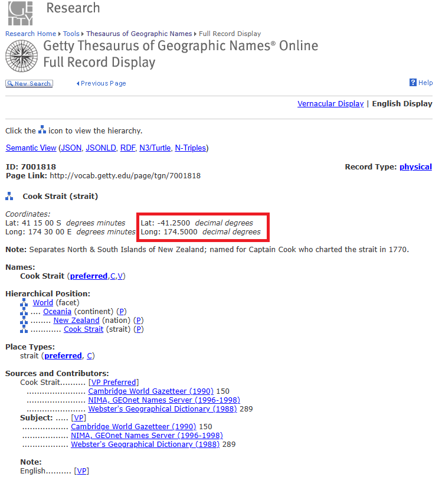
For Google Maps, the coordinates can be found in the url after searching.
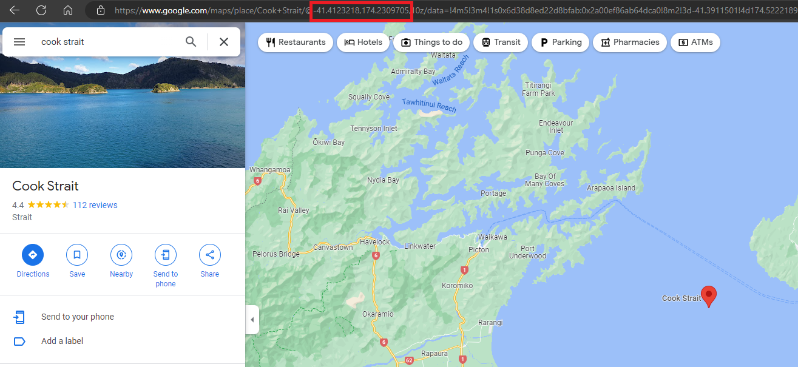
How to use Marine Regions Gazetteer tool
Marine Regions offers a marine gazetteer search engine to obtain geographic information and unique identifiers for marine regions. Once you have navigated to the gazetteer search engine, you have two options to search by: enter the name of the desired locality, or enter an MRGID code. Most likely you will have a locality name but not an MRGID. You may also select a placetype to search instead for types of regions that may be physical (e.g., seamount, bay, fjord, etc.) or administrative (e.g., exclusive economic zones, countries, etc). You can specify specific sources if known (e.g., published paper, organization, etc.). Finally, you can give a latitude/longitude coordinate with a radius around it to obtain a list of regions near that point.
For this example we will search by geographic name for the Bay of Fundy.
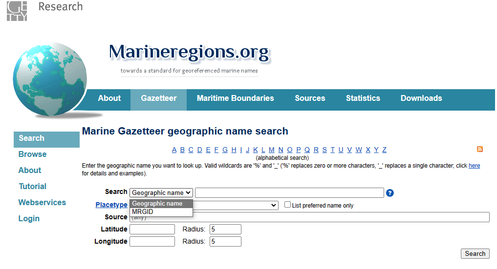
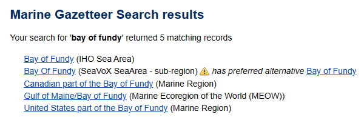
Our search returned 5 results from different sources (indicated in brackets). So how do we select the correct one? We can notice right away that the second result, from SeaVox SeaArea, has a preferred alternative, which when you click on the link brings you to the IHO Sea Area description for Bay of Fundy. So already we can likely drop SeaVox as a potential candidate. A good next step may be to compare the geographical extent for each to ensure it covers the desired area. If you are uncertain about exactly where your locality is, it may be better to be safe and choose a wider geographic region. Let’s compare the maps for all 5 results:
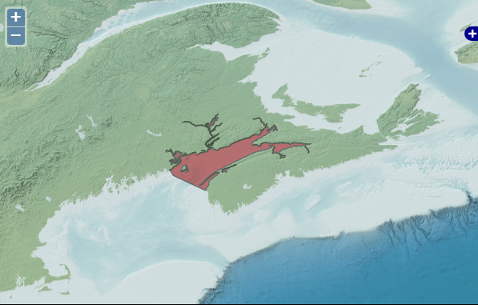
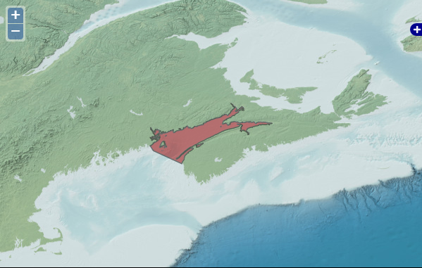
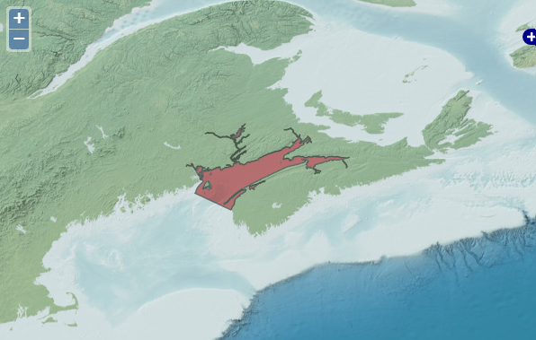
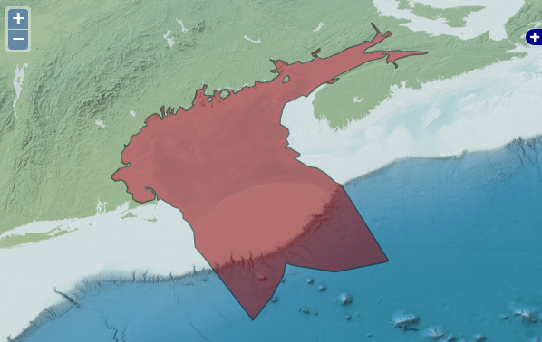
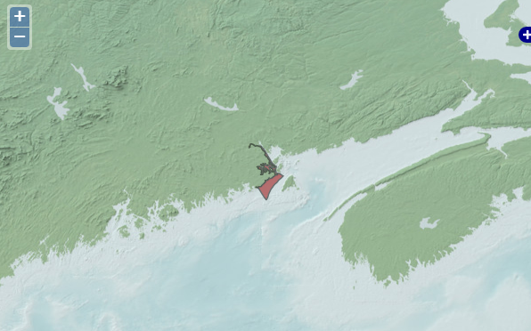
Notice that no region has the exact same geographic extent. Let’s select the IHO Bay of Fundy locality (the first search result) to ensure we are covering the entire area of the Bay of Fundy, but not the Gulf. Inspecting the rest of the page, there is a lot of other useful information we can use. We can populate the following OBIS fields for our dataset, copying the information outlined in the red boxes:
locationIDfrom MRGID: http://marineregions.org/mrgid/4289decimalLatitudeanddecimalLongitudelatitude and longitude coordinates of the location’s midpoint in decimal degrees: 44.97985204, -65.80601556coordinateUncertaintyInMetersprecision: 196726 meters
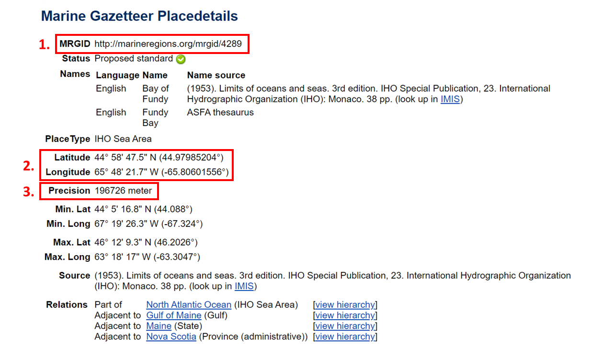
Since we are obtaining all this locality data from Marine Regions, we must also populate the locationAccordingTo field. Here, we will provide the name of the gazetteer we used to obtain the coordinates for the locality - in this case you would write “Marine Regions”. In georeferenceRemarks we must document that the coordinates are the region’s midpoint, that locality information was inferred by geographic name, and, where applicable, place the original locality name in the field verbatimLocality. Finally, the location portion of our dataset would look something like this:
| locality | locationID | decimalLatitude | decimalLongitude | coordinateUncertaintyInMeters | locationAccordingTo | georeferenceRemarks |
|---|---|---|---|---|---|---|
| Bay of Fundy | http://marineregions.org/mrgid/4289 | 44.97985204 | -65.80601556 | 196726 | Marine Regions | Coordinates are a midpoint inferred from location name |
The OBIS Mapper has built-in access to the Marine Regions Gazetteer. The video below demonstrates how to use this built-in tool, as well as how to navigate the Marine Regions Gazetter to obtain important georeferencing information to include in your data.
DwC Terms obtained from Maptool and Gazetteers
Below is a table summarizing the different DwC terms you can obtain from the OBIS Maptool or from the Gazeteers discussed above.
| DarwinCore Term | Maptool Term | Marine Regions Term | Notes |
|---|---|---|---|
| decimalLatitude | Latitude | Latitude | |
| decimalLongitude | Longitude | Longitude | |
| locationID | MRGID | ||
| coordinateUncertaintyInMeters | radius | precision (not always available) | |
| footprintWKT | WKT |
Low confidence taxonomic identification
In case of low confidence taxonomic identifications, and/or the scientific name contains qualifiers such as cf., ?, or aff., then you should:
- Put the name of the lowest possible taxon rank that can be determined with high-confidence in
scientificName(e.g. the genus) - Put any text regarding identification with low confidence and/or qualifiers in
identificationQualifier(e.g., cf., aff.) - Put the species name in
specificEpithet - Place the rank of the taxon documented in scientificName (e.g., genus) in
taxonRank - Document any relevant comments in
taxonRemarksoridentificationRemarks(e.g. reasoning for identification)
Take an example specimen named Pterois cf. volitans. The associated occurrence record would have the following taxonomic information:
scientificName= PteroisidentificationQualifier= cf. volitansspecificEpithet= leave blankscientificNameID= the one for PteroistaxonRank= genus
If the provided name is unaccepted in WoRMS, it is okay to use the unaccepted name in this field. scientificNameID should contain the WoRMS LSID for the genus.
There is a new Darwin Core term verbatimIdentification meant for containing the originally documented name, however this term is not yet implemented in OBIS so if you populate this field it will not be indexed alongside your data. However you can use identificationRemarks to add extra information.
The use and definitions for additional Open Nomenclature (ON) signs (identificationQualifier) can be found in Open Nomenclature in the biodiversity era, which provides examples for using the main Open Nomenclature qualifiers associated with physical specimens (Figure 1). Whereas the publication Recommendations for the Standardisation of Open Taxonomic Nomenclature for Image-Based Identifications provides examples and definitions for identificationQualifiers for image-based non-physical specimens (Figure 2).
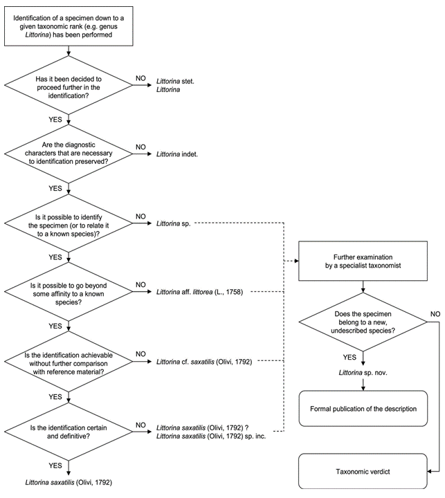
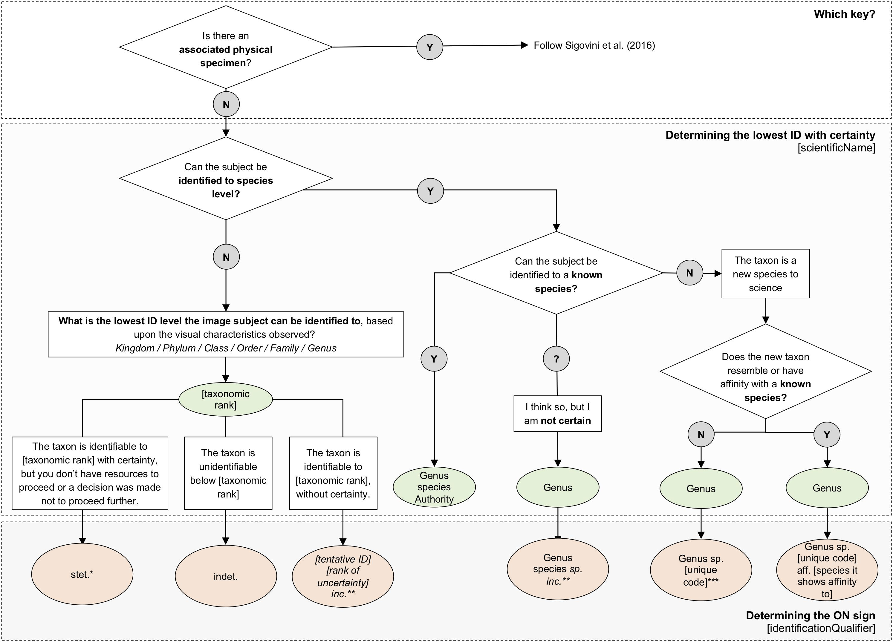
If the occurrence is instead unknown or new to science, it should be documented according to recommendations by Horton et al. 2021. Populate the scientificName field with the genus, and in identificationQualifer provide the ON sign ‘sp.’. Be sure to also indicate the reason why species-level identification is unavailable by supplementing ‘sp.’ with either stet. (stetit) or indet. (indeterminabilis). If neither of these are applicable, (e.g. for undescribed new species), add a unique taxon identifier code after ‘sp.’ to identificationQualifer. For example Eurythenes sp. DISCOLL.PAP.JC165.674. When adding a taxon identifier code, please avoid simple alphanumeric codes (i.e. Eurythenes sp. 1, Eurythenes sp. A). Like creating eventIDs or occurrenceIDs, try to provide more complex and globally unique identifiers. Identifiers could be constructed by combining higher taxonomic information with information related to a collection, institution, museum or collection code, sample number or museum accession number, expedition, dive number, or timestamp. This ensures namestrings will remain unique within OBIS. We also recommend including these temporary names on specimen labels for physical specimens.
Changes in taxonomic classification
Taxonomic classification can change over time - so what does that mean for your datasets when records change classification?
Because OBIS relies on WoRMS as the taxonomic backbone, changes in taxonomic classification will be updated between a day to a few weeks from the date of change, unless triggered manually. This means that the WoRMS LSID associated with a species in question will be used to automatically populate the taxonomic classification with the updated information.
However we recognize that there may be issues when larger changes occur (e.g. Family level splits). Then, records that are only identified to the Family level may not get updated properly. For example, there was a shift in coral taxonomy where the family Nephtheidae was split into Capnellidae and Alyconiidae for species occurring in the Northern Atlantic. While species that were identified as belonging to Nephtheidae have now been updated to belong to one of those two families, records that were only identified down to family (i.e., Nephtheidae) are still documented as Nephtheidae. Unfortunately there is currently no solution for dealing with splits like this, aside from contacting data providers and asking them to change the taxonomy.
A future solution may be an annotation registry that includes statements like “identifications of taxon x in geographic area y are misidentified and should be linked to taxon z”.
Uncertain measurements
individualCount
In some cases individualCount may be uncertain due to only fragments of organisms being found, or only a range of individuals is known. The occurrenceRemarks can be used to document information about decisions made during data formatting.
In cases where only certain body parts (e.g., head, tail, arm) are recorded, you can incorporate this information in measurementTypeID by finding a P01 code that contains elements from the S12 collection, which documents sub-components of biological entities. If a P01 code for your sub-component does not exist, you can request the creation of a P01 code. If you are uncertain whether fragments are from the same individual, a range can be provided and the uncertainty can be recorded in occurrenceRemarks.
When providing a range to estimate the count, there are two suggested approaches:
- Use MOF/eMoF: place the data in the (extended)MeasurementOrFact extension. This requires an additional two rows per Occurrence. One with the equivalent of a minimumIndividualCount and one with the equivalent of maximumIndividualCount.
- Place data into
dynamicProperties: Include the information in the Occurrence record itself, with no extension, and instead document it indynamicProperties, with a value such as {“minimumIndividualCount”:0, “maximumIndividualCount”:5}- We note that documenting the data in ‘dynamicProperties’ means the information will not be machine readable and may be more difficult for users to extract.
Abundance vs Count data: A brief clarification on abundance and count data: abundance is the number of individuals within an area or volume. This type of data is recorded in organismQuantity, where organismQuantityType should be used to specify the type of quantity (e.g., individuals, percent biomass, Braun Blanquet Scale, etc.).
However, if the value is just the number of individuals without reference to a space, this information is recorded in individualCount.
Non-marine species
If you are given an error that your taxon is not marine, please confirm first whether the species is actually freshwater by cross referencing with WoRMS or IRMNG. If the species is not marine (i.e. belongs to a non-marine genus), check with the data provider as necessary for possible misidentification. Finally you can contact WoRMS at info@marinespecies.org to discuss adding the taxon to the WoRMS register. You will be required to provide documentation in this case to confirm marine status of the taxon.
Otherwise, records marked as non-marine will be dropped from the published dataset, and this will be flagged in the data quality associated with your dataset.
Let’s consider an example within this dataset on benthic macroalgae. Inspecting the data quality report we can see there are three dropped records due to species not being marine.
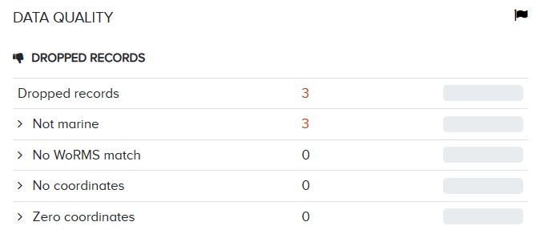
Clicking on the dropped records we can see which three species were dropped. By scrolling to the right of the table, we can see these records have two quality flags: NO_DEPTH and NOT_MARINE.
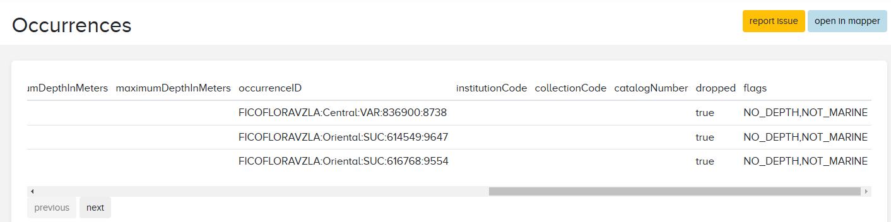
Let’s take a look at the first species, Pseudochantransia venezuelensis. When we search for this species on WoRMS we can see that the species is marked as freshwater.
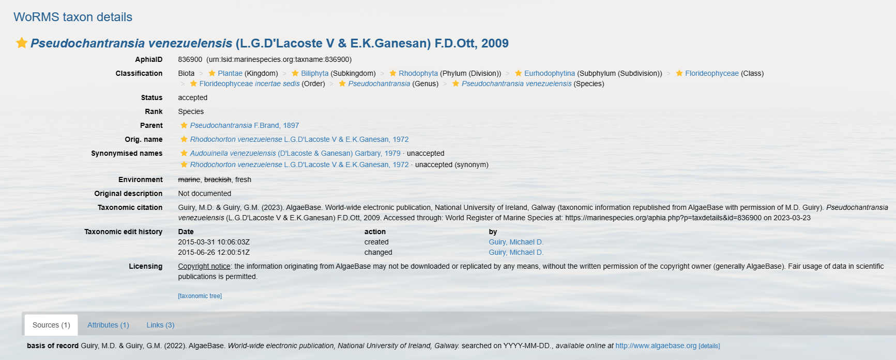
Cross-referencing with IRMNG, if we search for the genus-species, the species is not even found, an indication that it is not in the database (and also why it can be good to check multiple sources). Searching for just the genus, we can see that marine and brackish are stricken out, indicating the species is not marine.
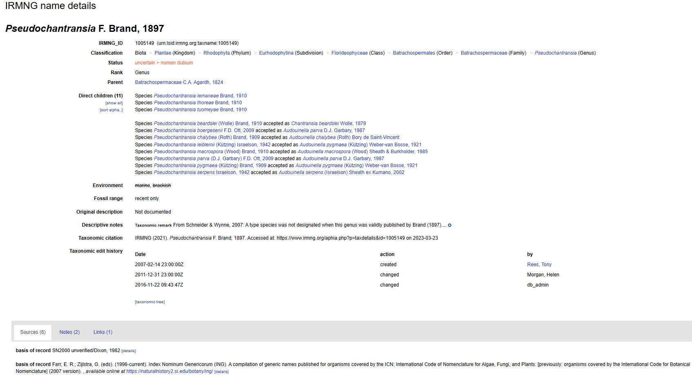
If you have species that are marked as non-marine in these registers but are either supposed to be marine, or were found in a marine environment, then you should contact WoRMS to discuss adding it to the register. For additions and/or edits to environmental or distribution records of a species, contact the WoRMS Data Management Team at info@marinespecies.org with your request along with your record or publication substantiating the addition/change.